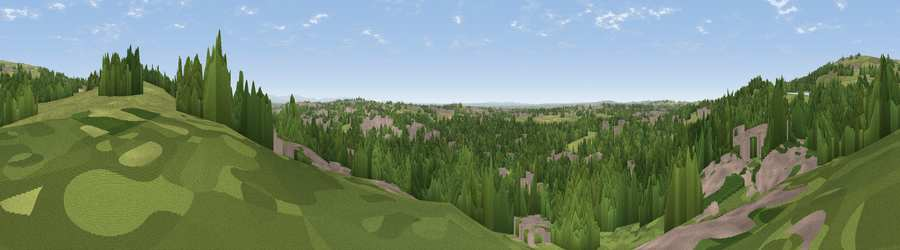

Viewpoint near Westhoughton
#32471 in England · top 76% of its area beats it · near WesthoughtonWhere it is
The exact computed spot (SD 67325 09475). Click the marker for map links.
The view, rendered

A 360° render of this exact spot computed from the terrain model, tree cover and land cover — summer colours, afternoon light, calibrated against photographs of famous viewpoints. Real trees, hedges and buildings will differ in detail.
The panorama
Grey silhouette: terrain skyline in each direction (720 bearings, Earth curvature and refraction included). Dashed green: skyline with trees (+15 m) and buildings (+8 m) as obstacles. Blue strip: how far the ground is visible on each bearing.
Where the view opens
Wedge length = distance to the farthest visible ground on that bearing (vegetation-aware). Rings at 10, 25 and 50 km.
What fills the view
52% woodland · 28% grassland · 17% built-up · 1% cropland
Angular shares of the visible panorama (visual magnitude), not map area. Landscape diversity 0.47 (0–1 Shannon).
Key numbers
More beautiful places nearby
The staircase of upgrades: each row has a higher view potential than everything closer. Driving times are estimates from straight-line distance, calibrated against real road routing — check an actual route before setting out.
| Place | Direction | Drive | Score |
|---|---|---|---|
| Viewpoint near Horwich | WNW · 1 km | ~3 min | 58.4 |
| White Brow | NNW · 3 km | ~8 min | 82.9 |
| Warton Crag | NNW · 66 km | ~89 min | 83.2 |
| Viewpoint near Grange-over-Sands | NNW · 74 km | ~98 min | 83.4 |
| Viewpoint near Cartmel | NNW · 77 km | ~100 min | 87.0 |
| Viewpoint near Cartmel | NNW · 77 km | ~101 min | 87.2 |
| Viewpoint near Finsthwaite | NNW · 84 km | ~108 min | 90.3 |
| The Knoll | S · 322 km | ~321 min | 91.0 |
53.58084, -2.49499 · source: screening · position refined by local search. Computed location — check access rights before visiting.